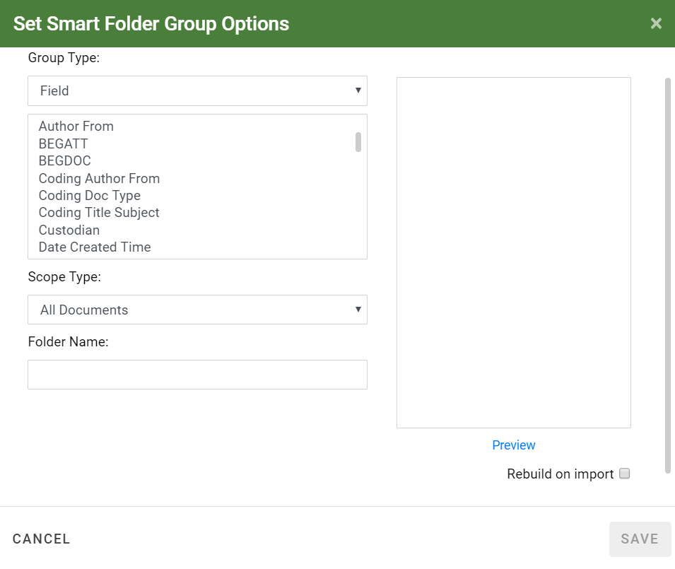

Smart Folders provide a way to find case records/documents based on a case field or document tag group (public tags, not private). Smart Folders are public by default; they can be private if you limit the folder scope to a private search. Smart Folders are “dynamic” in that they will periodically refresh based on changes that are made (such as tagging more documents) that match the defined criteria. You can also close a Smart Folder, then reopen it to refresh the contents.
Smart Folders can be based on a number of system fields and tag groups. Check with your administrator if you have any questions about the fields in your case.
Getting Started
Smart Folders are located in the Saved Searches & Smart Folders panel on the Visual Search Dashboard and Advanced Search screens in

To begin working with Smart Folders:
-
In
-
On the Visual Search Dashboard, hover your cursor over the magnifying glass in the left panel to view the Saved Searches & Smart Folders panel. You can also pin the panel; in place by clicking the pushpin icon.

-
Continue with the procedures described as follows.

Note: In order to proceed with the following procedures, you must have permission to create, edit, or delete Smart Folders.

A list of Smart Folders displays in this pane. From here you can rebuild, create new, or open existing Smart Folders.
Create a Smart Folder
When creating new Smart Folders, some steps you can take during the planning phase are:
-
Identify the required folder content (field or tag group).
-
Identify and/or create the applicable saved search if you want to limit the scope of the folder to a specific set of documents.
-
Give some consideration to the folder name so that folder content and purpose are clear. If several folders are to be defined, consider naming conventions for consistency and ease-of-use.
-
Ensure that the field or tag group is available in the case or batch (for example, is included in the selected coding form).
If you have the permission to do so, create a Smart Folder as follows:
-
Complete the steps in
-
Hover your cursor over the Smart Folders heading and Click
 to open the Set Smart Folder Group Options dialog box.
to open the Set Smart Folder Group Options dialog box.
- Complete the Set Smart Folder Group Options dialog box as described in the following table:
-
When the folder definition is complete, click
 . The folder is added
to the Saved Search pane on the Case View page.
. The folder is added
to the Saved Search pane on the Case View page.
|
item |
description |
||
|
Group Type |
Choose the folder content, Field or Tag Group. |
||
|
Folder Content |
Depending on the Group Type chosen, select an individual field or tag group name. |
||
|
Scope Type |
Choose either All Documents (entire case) or Saved Search. If you choose Saved
Search, the list of available searches are displayed;
select the required search. Click
|
||
|
Folder Name |
Enter a name for the folder. By default, the folder name is either the selected field or tag group name. |
||
|
Preview |
Click this link to display the folder content based on your group, content and scope selections. |
||
|
Rebuild on import |
Select this check box to automatically rebuild the folder if new data is added to your case. |